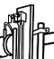

VENTURIMETER
Objective:
To determine co-efficient of discharge of the given venturimeter.
Apparatus used:
Venturimeter, differential manometer, collecting tank, piezometer, stopwatch, measuring scale.
A pipe of required diameter is selected and others are kept in the closed position.
The main inlet valve is opened to allow water to flow through the selected diameter pipe. Open the pipe valve, and change the knot of manometer from isolate position to air-vent position to remove the air inside the pipe.
Isolate Position
Air-Vent Position
The knob is then kept in the read position and note down the manometer reading.

Air-Vent Position
Read Position
Water is now allowed to flow through the selected venturimeter and this flow is made constant. At this flow rate the difference in pressure between inlet and throat is measured.
The exit valve of the collecting tank is closed and time taken for the tank water to rise by 5cm is noted.

Observations
d1
d2
A1
A2
Area of collecting tank (A) = 6750cm2
Rise (h)= 5cm
Time taken (t)=
Head Loss (H)=
Acceleration due to gravity (g) = 981 cm/sec2
Calculations
Characteristic Curves
Graphical Solution
Slope, n =
k =
Coefficient of discharge, Cd =
Trial =


CLOSED
CLOSED
CLOSED